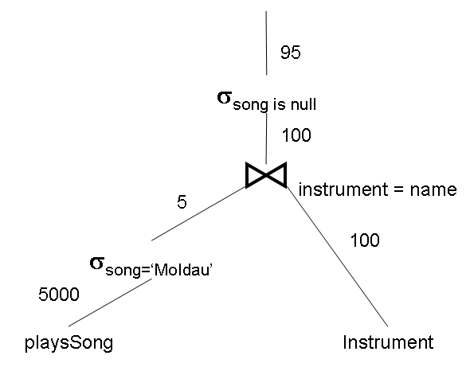

create table Person ( id int primary key, name varchar(100) ); create table Instrument ( name varchar(100) primary key ); create table plays ( person int, foreign key(person) references Person(id) on update cascade on delete cascade, instrument varchar(100), foreign key(instrument) references Instrument(name) on update cascade on delete cascade, primary key(instrument, person) ); create table playsSong ( person int, instrument varchar(100), foreign key(instrument, person) references plays(instrument, person) on update cascade on delete cascade, song varchar(200), primary key(instrument, person, song) );
Assume the following counts:
Show the optimized query plan for the following query:
Find the instruments that are never used for the song named 'Moldau'.
select i.name
from Instrument i
where not exists (
select *
from playsSong s
where s.song = 'Moldau'
and i.name = s.instrument
)
There are 5000 playsSong records and 1000 songs, so on average one would expect 5 playsSong records per song. The join order should be playsSong, Instrument because there is no selection on Instrument. The only index in playsSong is the primary key index, and in that index the song column is last, so the selection on playsSong must be a scan. The join is a right outer join which must be performed with a sort-merge. One then selects the instruments that did not match the records selected from playsSong.

© 2011 Ken Baclawski. All rights reserved. Redistribution and use in source and binary forms, with or without modification, are permitted provided that redistributions and uses retain this copyright notice.